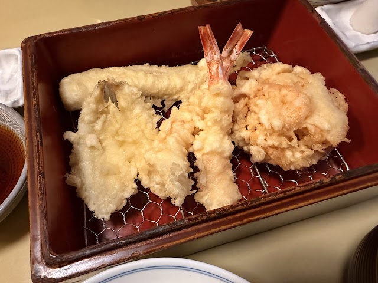
| 営業時間 | 月・木・金 11:30〜14:00, 17:00〜21:00 ／ 土・日 11:30〜20:00 |
|---|---|
| 定休日 | 火・水曜 |
| 住所 | 東京都台東区浅草１丁目３９−１３ |
| 予約 | 可 — ☎ 03-3841-4015 ／ 公式サイト |
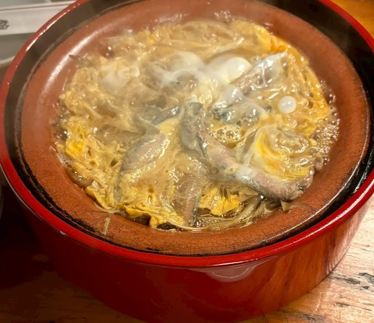
| 営業時間 | 月・火・水・木・金・土・日 11:00〜20:30 |
|---|---|
| 定休日 | なし(要最終確認) |
| 住所 | 東京都台東区駒形１丁目７−１２ |
| 予約 | 可 — ☎ 050-5448-6266 ／ 公式サイト |
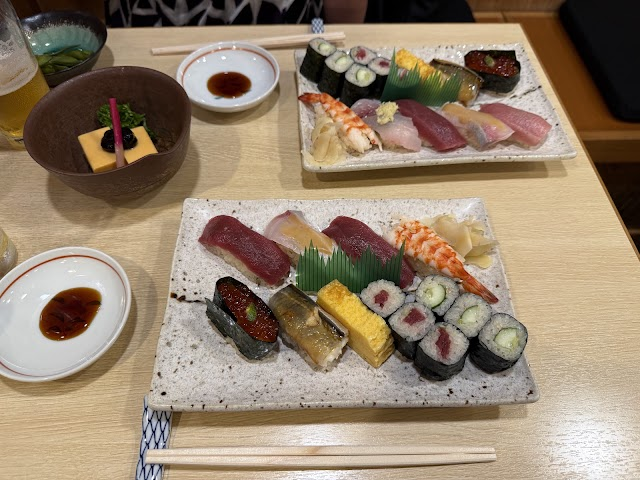
| 営業時間 | 火・水・木・金・土・日 11:30〜13:30, 17:00〜21:30 |
|---|---|
| 定休日 | 月曜 |
| 住所 | 東京都江東区富岡１丁目１３−１３ |
| 予約 | 可 — ☎ 03-3641-2863 ／ 公式サイト |
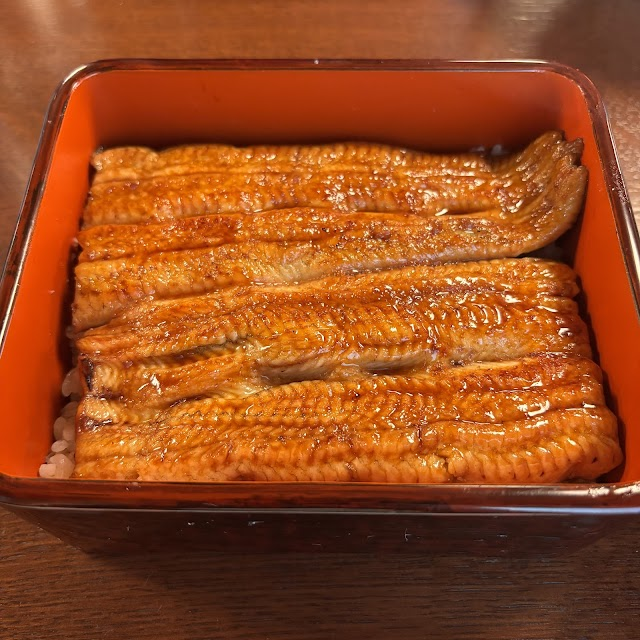
| 営業時間 | 水・木・金・土・日 11:30〜13:30, 16:00〜19:30 |
|---|---|
| 定休日 | 月・火曜 |
| 住所 | 東京都荒川区南千住５丁目３３−１ |
| 予約 | 要確認 — ☎ 03-3801-4670 |
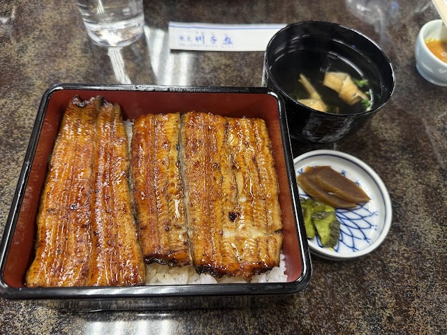
| 営業時間 | 月・水・木・金・土・日 11:00〜18:00 |
|---|---|
| 定休日 | 火曜 |
| 住所 | 東京都葛飾区柴又７丁目６−１６ |
| 予約 | 可 — ☎ 03-3657-4151 ／ 公式サイト |
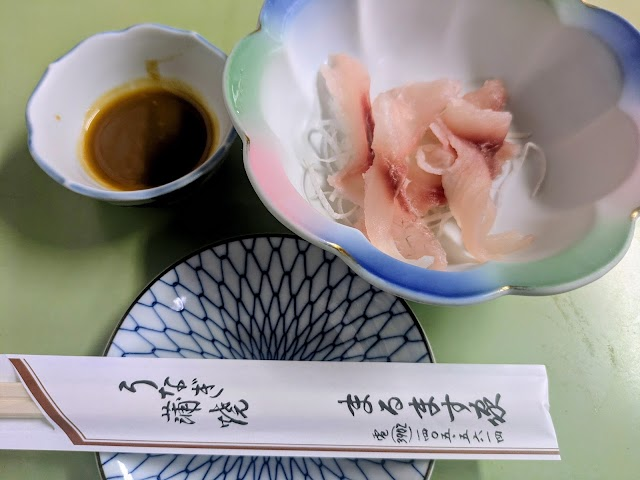
| 営業時間 | 火・水・木・金・土・日 11:00〜19:00 |
|---|---|
| 定休日 | 月曜 |
| 住所 | 東京都北区赤羽１丁目１７−７ |
| 予約 | 可 — ☎ 03-3902-5614 ／ 公式サイト |
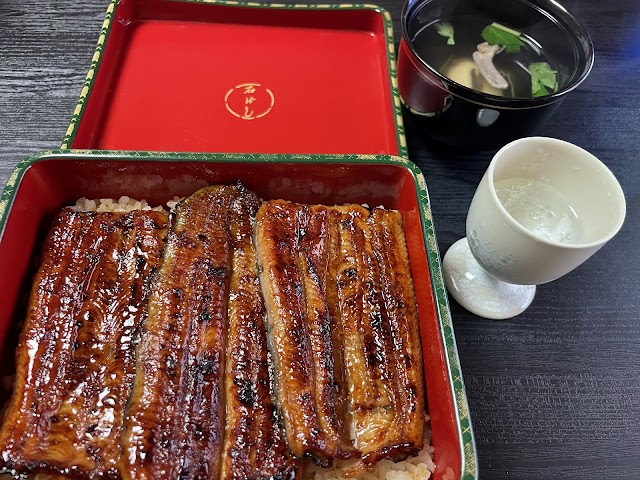
| 営業時間 | 火・水・木・金・土 12:00〜13:30, 18:00〜19:30 |
|---|---|
| 定休日 | 月・日曜 |
| 住所 | 東京都文京区水道２丁目４−２９ |
| 予約 | 可 — ☎ 03-3813-8038 ／ 公式サイト |
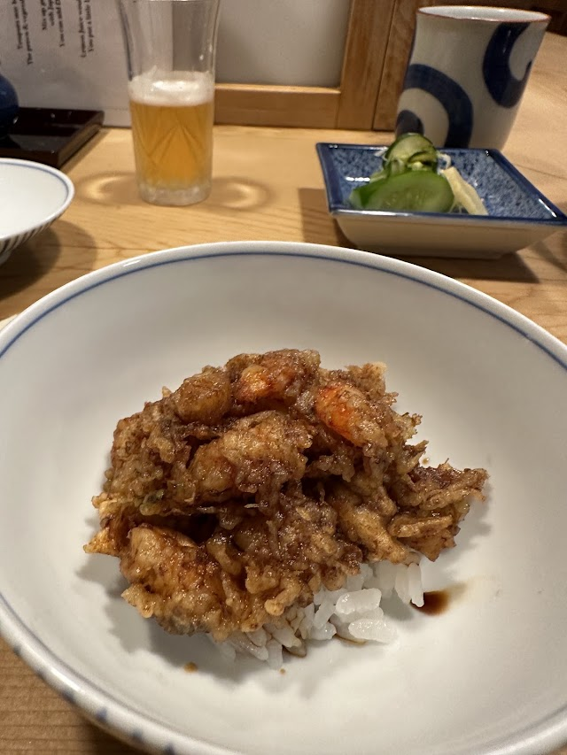
| 営業時間 | 月・火・水・木・金・土 11:30〜14:00, 18:00〜22:00 |
|---|---|
| 定休日 | 日曜 |
| 住所 | 東京都新宿区神楽坂３丁目１ |
| 予約 | 可 — ☎ 03-3269-1414 ／ 公式サイト |
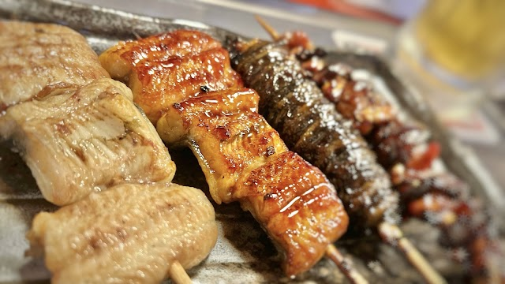
| 営業時間 | 月・火・水・木・金・土・日 11:30〜14:00, 16:30〜21:00 |
|---|---|
| 定休日 | なし(要最終確認) |
| 住所 | 東京都品川区東大井５丁目７−１５ サンローランハイツ |
| 予約 | 可 — ☎ 03-5479-4808 ／ 公式サイト |
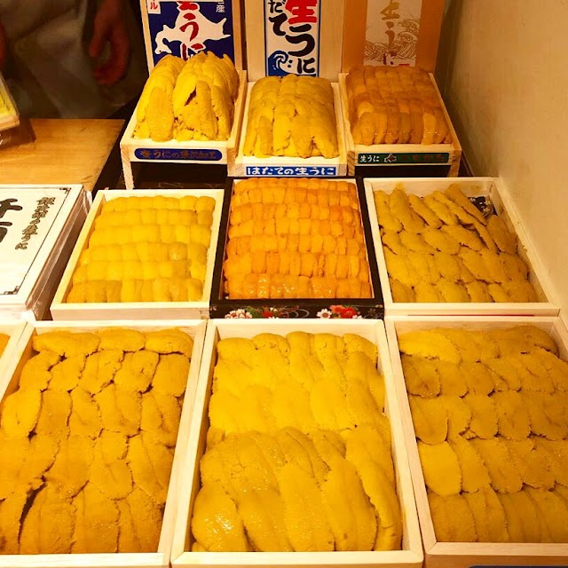
| 営業時間 | 月・火・水・木・金・土 18:00〜0:00 |
|---|---|
| 定休日 | 日曜 |
| 住所 | 東京都目黒区青葉台１丁目２８−２ |
| 予約 | 可 — ☎ 03-3712-6999 |
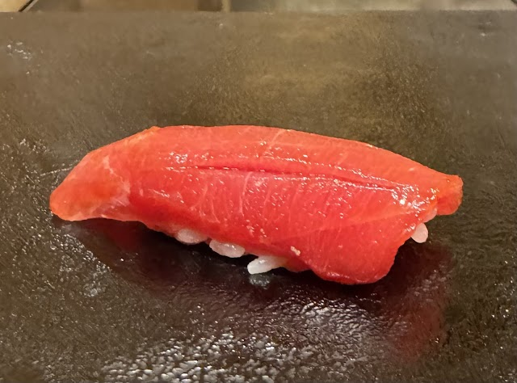
| 営業時間 | 月・火・水・木・金・土 18:00〜22:30 |
|---|---|
| 定休日 | 日曜 |
| 住所 | 東京都渋谷区宇田川町３７−１５ ARISTO渋谷 B1F |
| 予約 | 可 — ☎ 03-6804-7095 ／ 公式サイト |
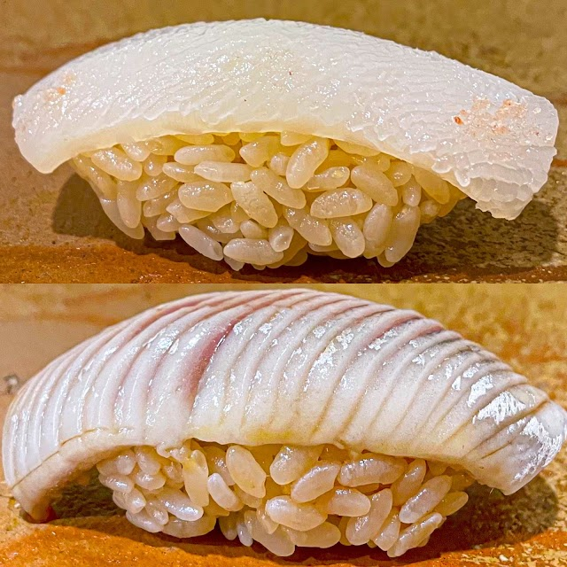
| 営業時間 | 火・水・金・土 17:00〜22:00 |
|---|---|
| 定休日 | 月・木・日曜 |
| 住所 | 東京都板橋区板橋１丁目４９−１４ 宮本 ビル 1F |
| 予約 | 可 — ☎ 03-5944-1435 ／ 公式サイト |
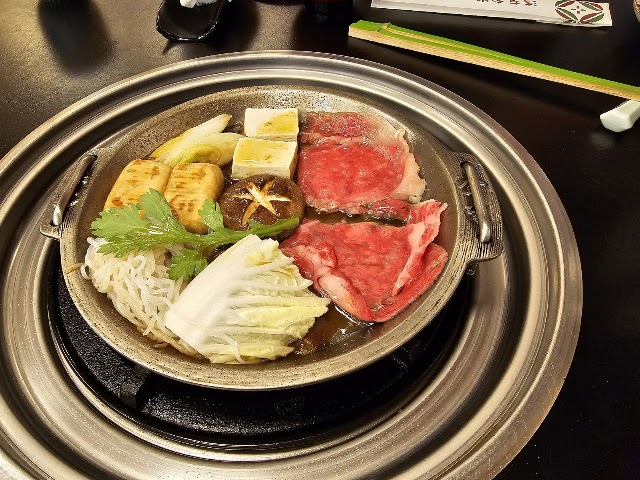
| 営業時間 | 月・火・水・木・金・土・日 11:30〜19:30 |
|---|---|
| 定休日 | なし(要最終確認) |
| 住所 | 東京都台東区西浅草３丁目１−１２ |
| 予約 | 可 — ☎ 03-3841-1114 ／ 公式サイト |
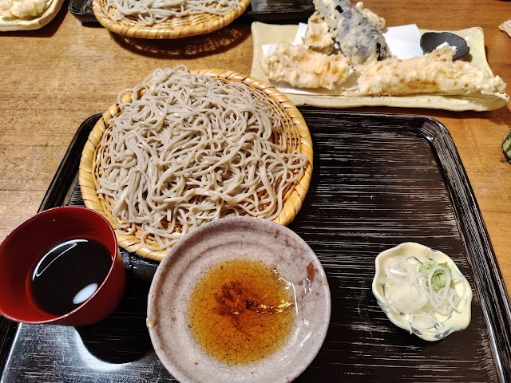
| 営業時間 | 水・木・金・土・日 11:30〜15:30 |
|---|---|
| 定休日 | 月・火曜 |
| 住所 | 東京都墨田区亀沢１丁目６−５ |
| 予約 | 可 — ☎ 03-3626-1125 ／ 公式サイト |
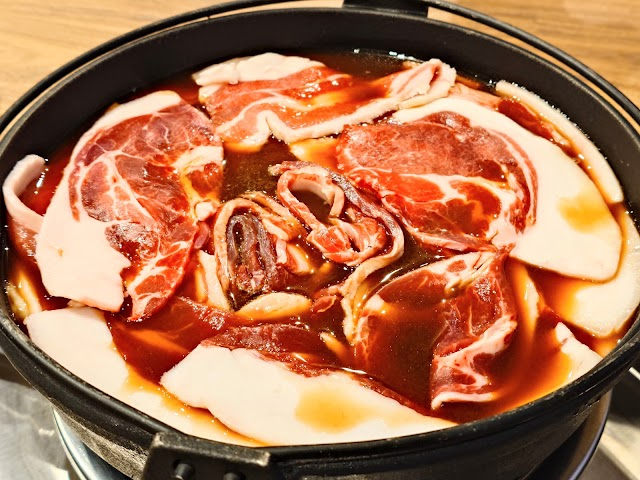
| 営業時間 | 月・火・水・木・金・土 17:00〜20:30 |
|---|---|
| 定休日 | 日曜 |
| 住所 | 東京都墨田区両国１丁目１０−２ 両国グレースマンション |
| 予約 | 可 — ☎ 03-3631-5596 ／ 公式サイト |
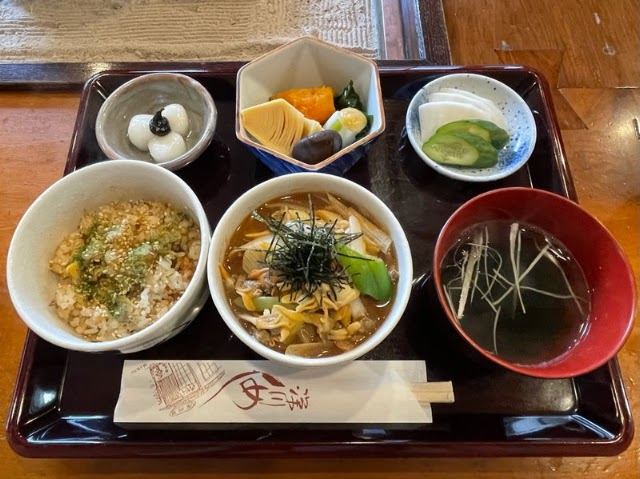
| 営業時間 | 火・水・木・金 11:30〜14:30, 17:00〜20:30 ／ 土・日 11:30〜16:30 |
|---|---|
| 定休日 | 月曜 |
| 住所 | 東京都江東区三好１丁目６−７ |
| 予約 | 要確認 — ☎ 03-3642-7878 ／ 公式サイト |
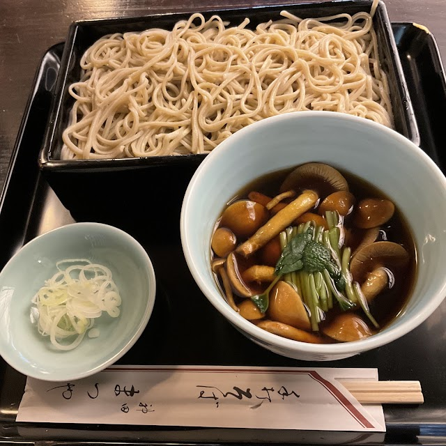
| 営業時間 | 火・水・木・金 11:00〜20:30 ／ 土 11:00〜19:30 |
|---|---|
| 定休日 | 月・日曜 |
| 住所 | 東京都千代田区神田須田町１丁目１３ |
| 予約 | 要確認 — ☎ 03-3251-1556 ／ 公式サイト |
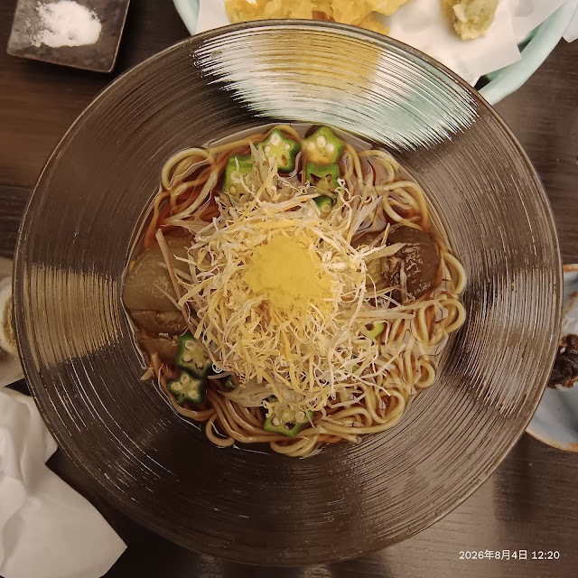
| 営業時間 | 月・火・木・金・土・日 11:30〜20:30 |
|---|---|
| 定休日 | 水曜 |
| 住所 | 東京都千代田区神田淡路町２丁目１０ |
| 予約 | 可 — ☎ 03-3251-0287 ／ 公式サイト |
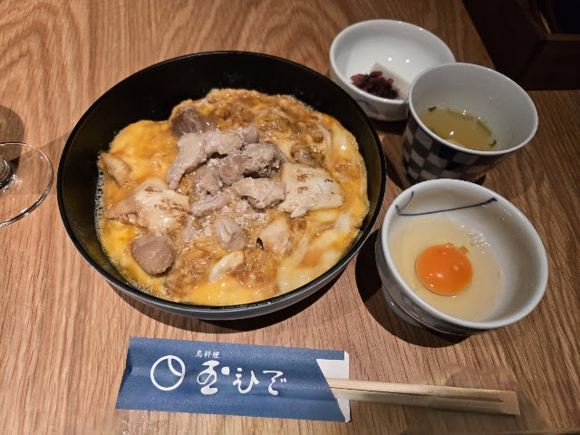
| 営業時間 | 月・火・水・木・金・土・日 11:30〜13:30, 17:00〜20:30 |
|---|---|
| 定休日 | なし(要最終確認) |
| 住所 | 東京都中央区日本橋人形町１丁目１７−１０ |
| 予約 | 可 — ☎ 03-3668-7651 ／ 公式サイト |
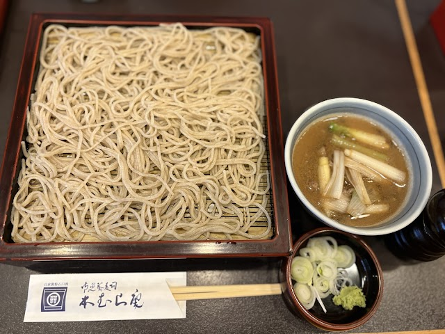
| 営業時間 | 月・木・金・土・日 11:00〜21:00 |
|---|---|
| 定休日 | 火・水曜 |
| 住所 | 東京都杉並区上荻２丁目７−１１ |
| 予約 | 可 — ☎ 03-3390-0325 ／ 公式サイト |
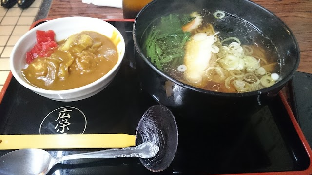
| 営業時間 | 月・火・木・金・土・日 11:00〜21:00 |
|---|---|
| 定休日 | 水曜 |
| 住所 | 東京都大田区東矢口１丁目１７−１４ |
| 予約 | 要確認 — ☎ 03-3731-3097 ／ 公式サイト |
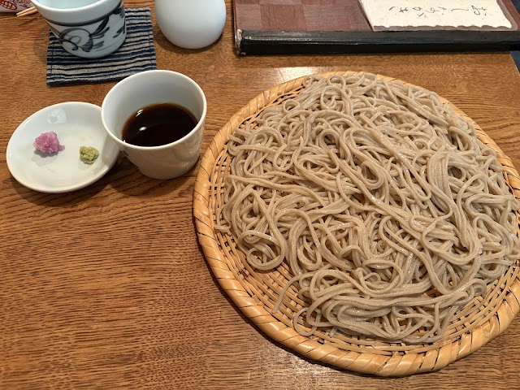
| 営業時間 | 火・水・木・金・土・日 11:30〜15:00, 18:00〜20:30 |
|---|---|
| 定休日 | 月曜 |
| 住所 | 東京都豊島区巣鴨４丁目１４−１５ |
| 予約 | 可 — ☎ 050-5485-5846 ／ 公式サイト |
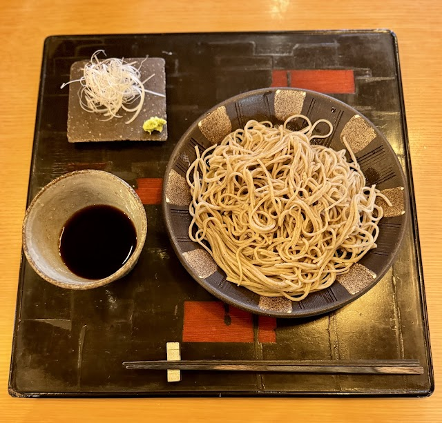
| 営業時間 | 月・水・木・金・土・日 11:30〜21:00 |
|---|---|
| 定休日 | 火曜 |
| 住所 | 東京都世田谷区代沢３丁目７−１４ |
| 予約 | 可 — ☎ 03-5431-0141 ／ 公式サイト |
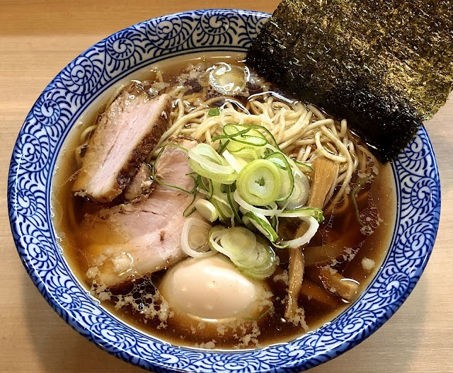
| 営業時間 | 月・火・木・金・土・日 11:30〜14:30 |
|---|---|
| 定休日 | 水曜 |
| 住所 | 東京都品川区中延２丁目１５−１０ |
| 予約 | 要確認 — ☎ 03-3787-2100 ／ 公式サイト |
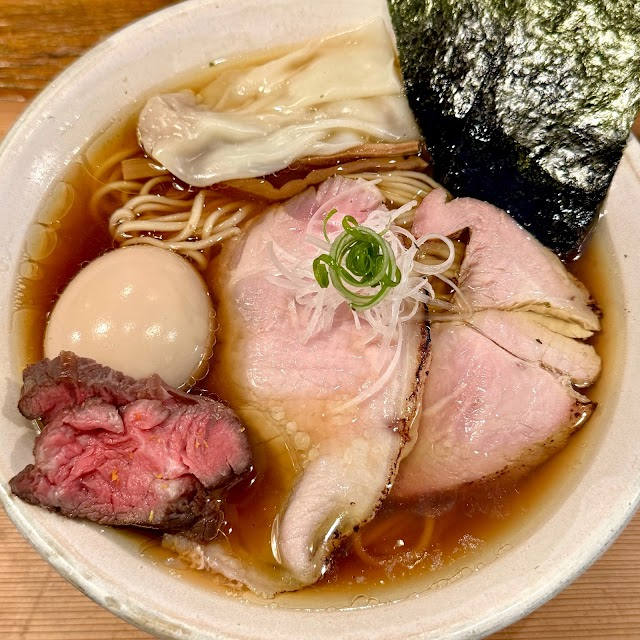
| 営業時間 | 月・火・金・土・日 11:00〜15:00 |
|---|---|
| 定休日 | 水・木曜 |
| 住所 | 東京都品川区南大井６丁目１１−１０ |
| 予約 | 要確認 — 公式サイト |
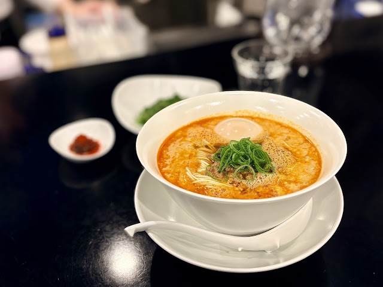
| 営業時間 | 月 11:30〜15:00 ／ 水・木・金・土・日 11:30〜15:00, 18:00〜21:00 |
|---|---|
| 定休日 | 火曜 |
| 住所 | 東京都豊島区南大塚２丁目３４−４ ＳＫＹ南大塚 １F |
| 予約 | 要確認 — ☎ 03-6304-1811 ／ 公式サイト |
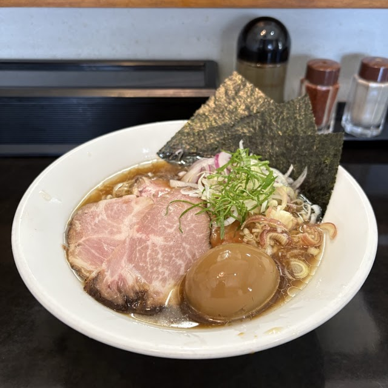
| 営業時間 | 月・火・水・木・金 11:00〜15:00, 18:00〜21:00 ／ 土・日 11:00〜17:00 |
|---|---|
| 定休日 | なし(要最終確認) |
| 住所 | 東京都台東区下谷１丁目１１−７ リベール入谷 １F |
| 予約 | 要確認 — ☎ 03-3847-8553 ／ 公式サイト |
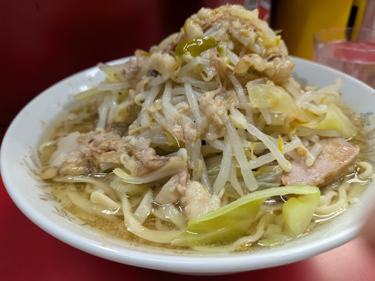
| 営業時間 | 月・火・水・木・金・土 8:00〜20:00 |
|---|---|
| 定休日 | 日曜 |
| 住所 | 東京都港区三田２丁目１６−４ |
| 予約 | 要確認 |
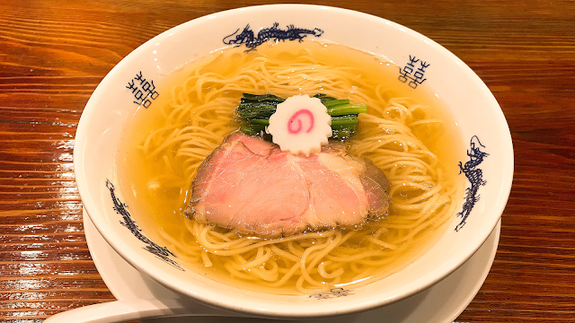
| 営業時間 | 月・火・水・木・金・土・日 11:00〜15:00, 18:00〜21:00 |
|---|---|
| 定休日 | なし(要最終確認) |
| 住所 | 東京都文京区本郷３丁目３０−７ 熊野ビル B101 |
| 予約 | 要確認 — 公式サイト |
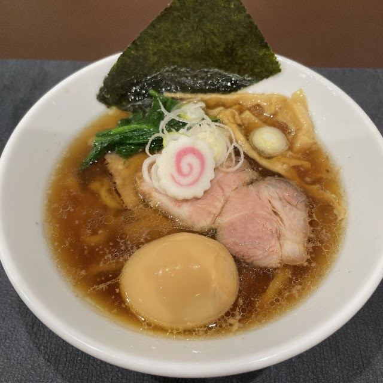
| 営業時間 | 火・水・木・金・土・日 17:00〜22:00 |
|---|---|
| 定休日 | 月曜 |
| 住所 | 東京都墨田区千歳３丁目１６−２ |
| 予約 | 要確認 — 公式サイト |
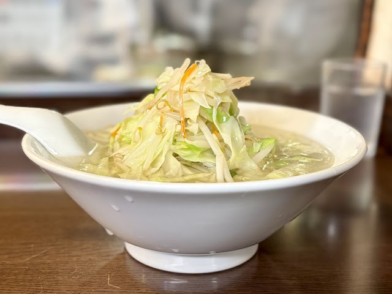
| 営業時間 | 火・水・木・金・土 11:00〜17:00 |
|---|---|
| 定休日 | 月・日曜 |
| 住所 | 東京都杉並区西荻南３丁目１１−９ |
| 予約 | 要確認 — ☎ 03-3333-8501 |
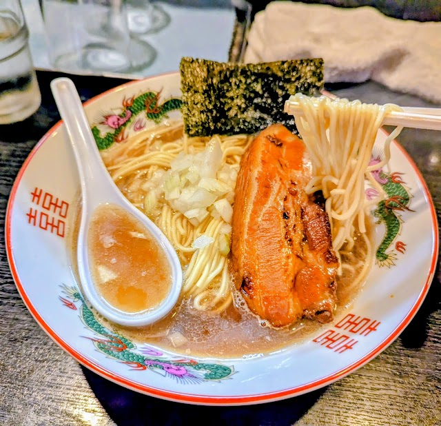
| 営業時間 | 火・水・木・金・土 11:45〜14:30, 18:10〜20:00 |
|---|---|
| 定休日 | 月・日曜 |
| 住所 | 東京都板橋区前野町４丁目５８−１０ |
| 予約 | 要確認 — ☎ 080-4928-0013 ／ 公式サイト |
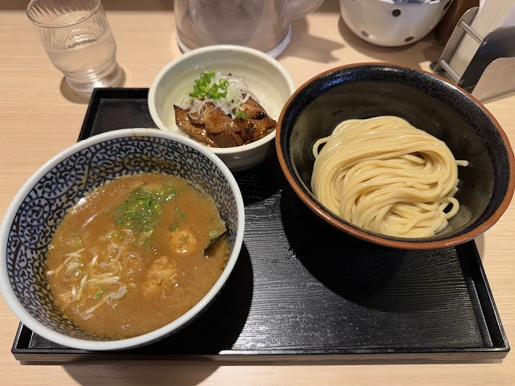
| 営業時間 | 月・火・水・木・金・土・日 11:00〜15:00, 18:00〜21:00 |
|---|---|
| 定休日 | なし(要最終確認) |
| 住所 | 東京都葛飾区東新小岩１丁目４−１７ |
| 予約 | 可 — 公式サイト |
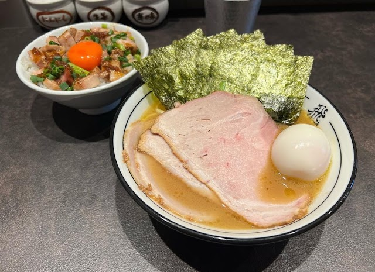
| 営業時間 | 月・火・水・木・金 11:00〜16:00, 17:00〜21:00 ／ 土 11:00〜20:00 |
|---|---|
| 定休日 | 日曜 |
| 住所 | 東京都大田区蒲田５丁目２−５ |
| 予約 | 要確認 — 公式サイト |
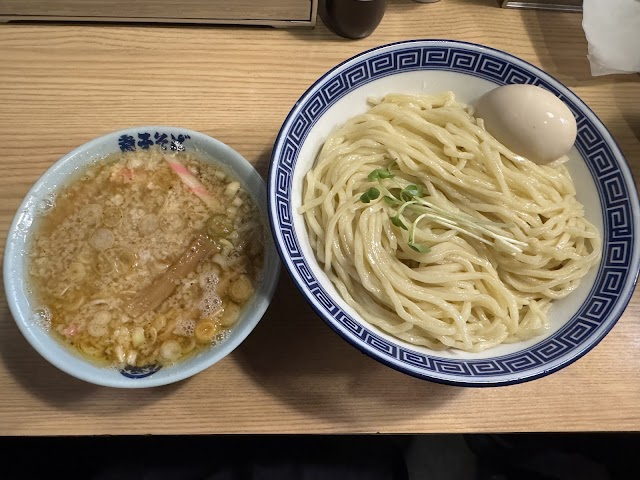
| 営業時間 | 月・水・木・金 11:00〜15:00, 17:00〜21:00 ／ 土・日 11:00〜21:00 |
|---|---|
| 定休日 | 火曜 |
| 住所 | 東京都北区上十条１丁目１３−２ |
| 予約 | 要確認 — ☎ 03-6454-3983 ／ 公式サイト |
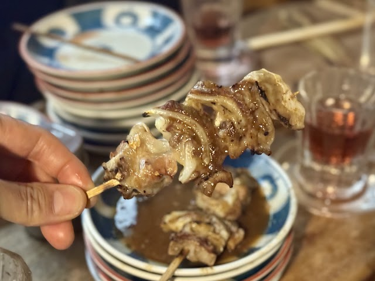
| 営業時間 | 月・火・水・木・金 14:00〜19:00 ／ 土 10:00〜12:00 |
|---|---|
| 定休日 | 日曜 |
| 住所 | 東京都葛飾区立石１丁目１８−８ |
| 予約 | 要確認 — ☎ 03-3697-5738 |
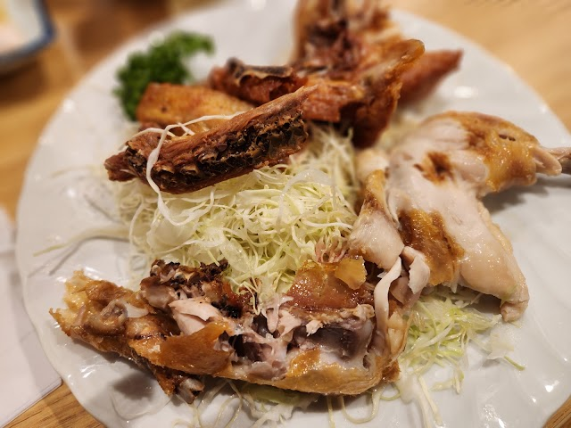
| 営業時間 | 水・木・金・土 16:00〜20:00 ／ 日 15:00〜20:00 |
|---|---|
| 定休日 | 月・火曜 |
| 住所 | 東京都葛飾区立石７丁目３−２ 水澤ビル １F |
| 予約 | 可 — ☎ 03-3697-7025 |
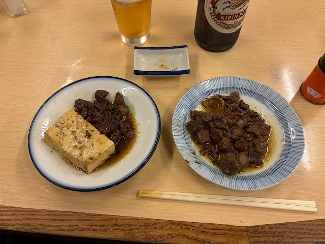
| 営業時間 | 月・火・水・木・金 16:30〜20:30 |
|---|---|
| 定休日 | 土・日曜 |
| 住所 | 東京都足立区千住３丁目４６ |
| 予約 | 要確認 — ☎ 03-3881-6050 |
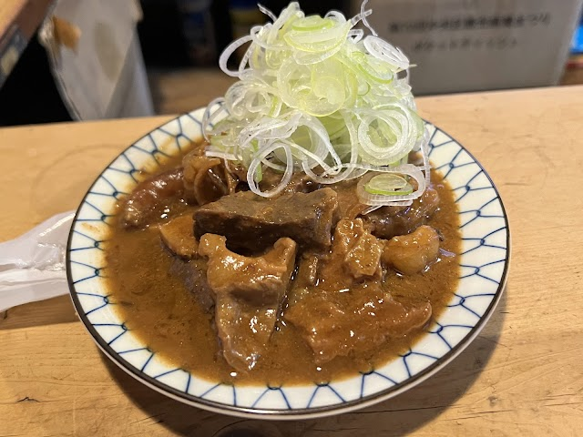
| 営業時間 | 火・水・木・金・土 16:00〜21:00 |
|---|---|
| 定休日 | 月・日曜 |
| 住所 | 東京都中央区月島３丁目１５−１２ |
| 予約 | 要確認 — ☎ 03-3531-1974 |
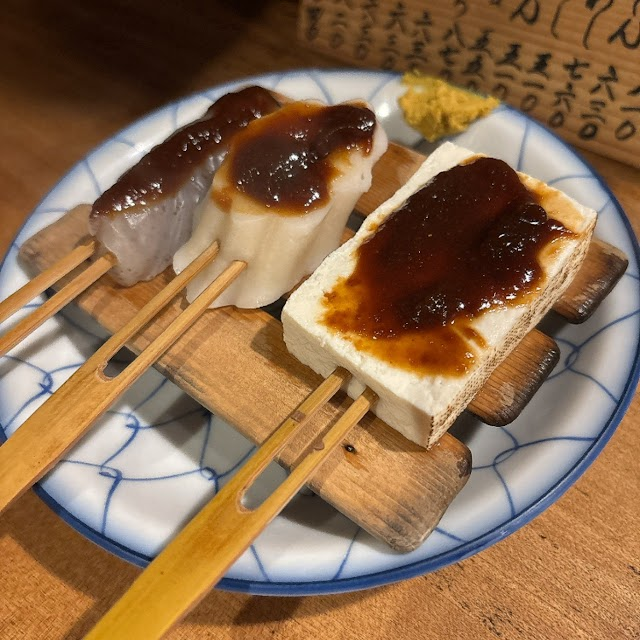
| 営業時間 | 月・火・水・木・金・土 17:00〜20:00 |
|---|---|
| 定休日 | 日曜 |
| 住所 | 東京都台東区根岸３丁目６−２３−１８ |
| 予約 | 可 — ☎ 03-3872-2227 |
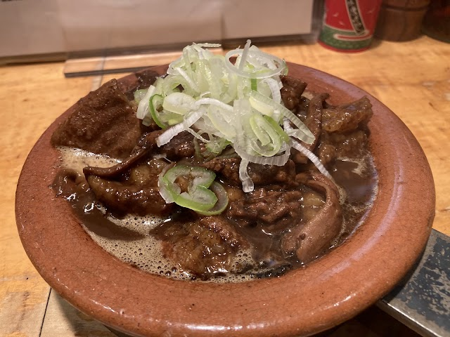
| 営業時間 | 月・火・水・木 17:00〜21:40 ／ 金・土 17:00〜22:00 |
|---|---|
| 定休日 | 日曜 |
| 住所 | 東京都江東区森下２丁目１８−８ |
| 予約 | 可 — ☎ 03-3633-1638 ／ 公式サイト |
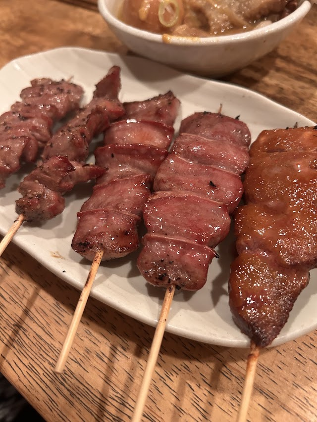
| 営業時間 | 月・火・水・木・金 17:00〜22:00 ／ 土・日 16:00〜22:00 |
|---|---|
| 定休日 | なし(要最終確認) |
| 住所 | 東京都中野区野方５丁目２８−３ 秋元屋 |
| 予約 | 要確認 — ☎ 03-3338-6236 |
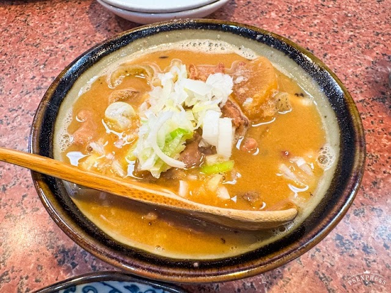
| 営業時間 | 月・火・水・木・金・土 17:30〜0:00 |
|---|---|
| 定休日 | 日曜 |
| 住所 | 東京都墨田区八広２丁目２−１２ |
| 予約 | 可 — ☎ 03-3610-0793 |
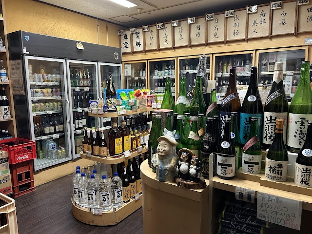
| 営業時間 | 月・火・水・木・金 10:30〜22:00 ／ 土 10:30〜21:00 |
|---|---|
| 定休日 | 日曜 |
| 住所 | 東京都荒川区西日暮里２丁目２２−１ |
| 予約 | 要確認 — ☎ 03-3891-5940 ／ 公式サイト |
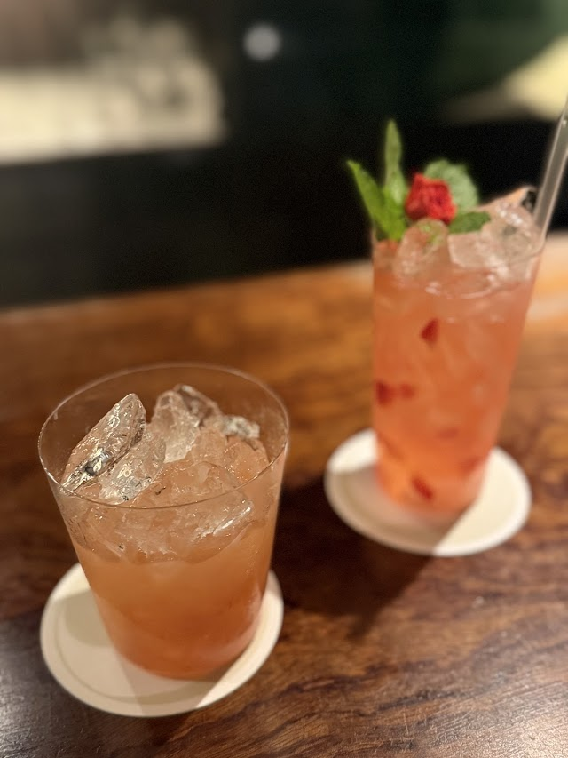
| 営業時間 | 月・火・金・土・日 17:00〜0:00 |
|---|---|
| 定休日 | 水・木曜 |
| 住所 | 東京都渋谷区渋谷３丁目６−２ 第2矢木ビル B1 |
| 予約 | 可 — ☎ 03-5485-8405 ／ 公式サイト |
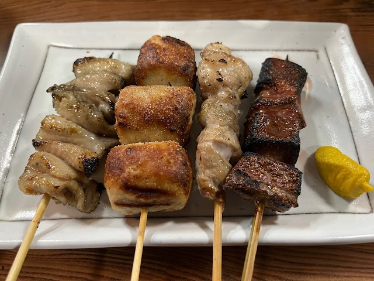
| 営業時間 | 月・火・水・木・金・土 16:00〜23:00 ／ 日 15:00〜22:00 |
|---|---|
| 定休日 | なし(要最終確認) |
| 住所 | 東京都大田区西蒲田７丁目３−１ |
| 予約 | 可 — ☎ 03-3735-8915 |
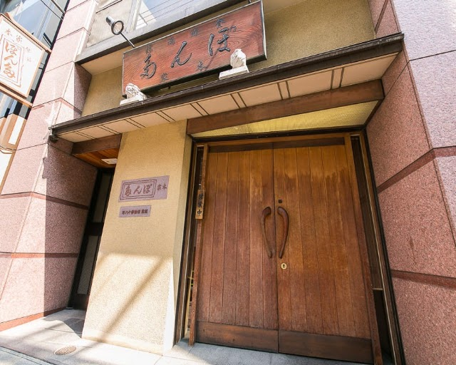
| 営業時間 | 火・水・木・金・土 11:00〜14:00, 16:30〜20:20 ／ 日 11:00〜14:00, 16:00〜20:20 |
|---|---|
| 定休日 | 月曜 |
| 住所 | 東京都台東区上野３丁目２３−３ |
| 予約 | 可 — ☎ 050-5492-8353 ／ 公式サイト |
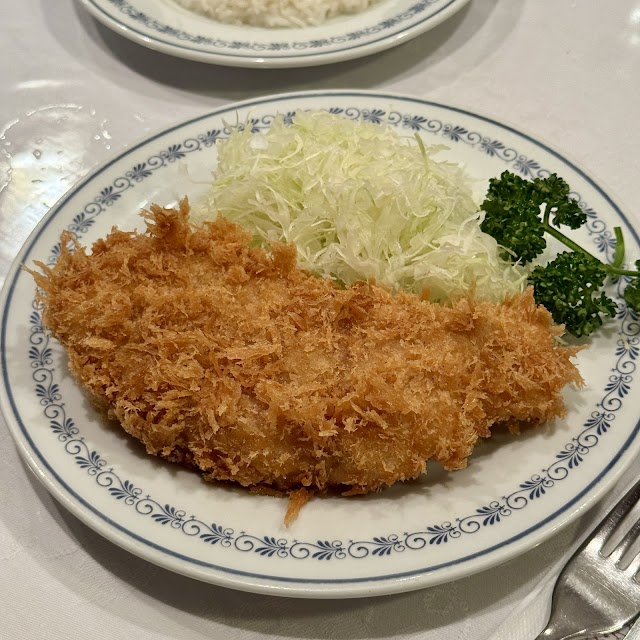
| 営業時間 | 月・火・水・木・金・土 11:15〜14:00, 17:30〜20:00 |
|---|---|
| 定休日 | 日曜 |
| 住所 | 東京都中央区銀座３丁目５−１６ |
| 予約 | 可 — ☎ 03-3561-3882 ／ 公式サイト |
| 営業時間 | 月・火・水・木・金・土 11:00〜20:00 |
|---|---|
| 定休日 | 日曜 |
| 住所 | 東京都千代田区神田神保町１丁目６ サンビル B1 |
| 予約 | 要確認 — ☎ 03-3291-1475 ／ 公式サイト |
| 営業時間 | 月・火・水・木・金 11:30〜15:00, 17:00〜23:00 ／ 土・日 11:30〜23:00 |
|---|---|
| 定休日 | なし(要最終確認) |
| 住所 | 東京都新宿区歌舞伎町１丁目２３−１４ 第1メトロビル 3F |
| 予約 | 可 — ☎ 050-1784-2298 ／ 公式サイト |
| 営業時間 | 火・水・木・金・土・日 11:20〜15:00, 18:00〜22:00 |
|---|---|
| 定休日 | 月曜 |
| 住所 | 東京都世田谷区太子堂４丁目２８−６ |
| 予約 | 可 — ☎ 080-9432-8200 ／ 公式サイト |
| 営業時間 | 月・火・水・木・金・土・日 11:00〜15:00, 17:00〜22:00 |
|---|---|
| 定休日 | なし(要最終確認) |
| 住所 | 東京都江戸川区西葛西３丁目１３−３ マンションよしの |
| 予約 | 可 — ☎ 03-5667-3885 |
| 営業時間 | 月・火・水・木・金 11:30〜13:30, 17:00〜20:30 |
|---|---|
| 定休日 | 土・日曜 |
| 住所 | 東京都大田区蒲田５丁目１６−８ |
| 予約 | 要確認 — ☎ 03-3731-5029 ／ 公式サイト |
| 営業時間 | 水・木・金・土・日 11:30〜14:00, 18:00〜20:30 |
|---|---|
| 定休日 | 月・火曜 |
| 住所 | 東京都墨田区文花１丁目６−１０ |
| 予約 | 可 — ☎ 03-3613-4020 ／ 公式サイト |
| 営業時間 | 月・火・水・木・金・土・日 11:00〜22:00 |
|---|---|
| 定休日 | なし(要最終確認) |
| 住所 | 東京都豊島区西池袋３丁目２６−６ |
| 予約 | 要確認 — ☎ 03-3982-1703 ／ 公式サイト |
| 営業時間 | 月・火・水・木・金・土 11:00〜14:00, 17:00〜20:00 |
|---|---|
| 定休日 | 日曜 |
| 住所 | 東京都品川区東五反田１丁目１３−９ |
| 予約 | 可 — ☎ 03-3441-2902 ／ 公式サイト |
| 営業時間 | 月・火・水・木・土・日 11:30〜15:00, 17:00〜21:00 |
|---|---|
| 定休日 | 金曜 |
| 住所 | 東京都渋谷区道玄坂２丁目１９−２ ムルギービル １階 |
| 予約 | 要確認 — ☎ 03-3461-8809 ／ 公式サイト |
| 営業時間 | 月・水・木・金・土・日 16:00〜21:00 |
|---|---|
| 定休日 | 火曜 |
| 住所 | 東京都目黒区下目黒１丁目１−２ |
| 予約 | 可 — ☎ 03-3491-9928 ／ 公式サイト |
| 営業時間 | 月・火・水・木・金・土 11:00〜20:00 |
|---|---|
| 定休日 | 日曜 |
| 住所 | 東京都千代田区神田神保町１丁目９−１ |
| 予約 | 要確認 |
| 営業時間 | 月・火・水・木・金 9:00〜21:00 ／ 土・日 11:00〜20:00 |
|---|---|
| 定休日 | なし(要最終確認) |
| 住所 | 東京都中央区銀座７丁目３−６ |
| 予約 | 要確認 — ☎ 03-3571-1554 ／ 公式サイト |
| 営業時間 | 月・火・水・木・金 10:00〜17:00 ／ 土・日 10:00〜18:00 |
|---|---|
| 定休日 | なし(要最終確認) |
| 住所 | 東京都台東区浅草１丁目３１−１２ |
| 予約 | 要確認 — ☎ 050-5304-5899 ／ 公式サイト |
| 営業時間 | 火・水・木・金・土 7:30〜18:30 |
|---|---|
| 定休日 | 月・日曜 |
| 住所 | 東京都江東区森下１丁目６−１０ |
| 予約 | 要確認 — ☎ 03-3635-1464 |
| 営業時間 | 月・火・木・金・土・日 9:00〜17:00 |
|---|---|
| 定休日 | 水曜 |
| 住所 | 東京都墨田区堤通１丁目５−９ |
| 予約 | 要確認 — ☎ 03-3611-6831 ／ 公式サイト |
| 営業時間 | 月・火・木・金・土 9:00〜17:00 |
|---|---|
| 定休日 | 水・日曜 |
| 住所 | 東京都新宿区若葉１丁目１０ 1F |
| 予約 | 要確認 — ☎ 03-3351-4396 ／ 公式サイト |
| 営業時間 | 月・火・水・木・金・土・日 9:00〜21:00 |
|---|---|
| 定休日 | なし(要最終確認) |
| 住所 | 東京都豊島区東池袋１丁目１−４ タカセセントラルビル |
| 予約 | 要確認 — ☎ 03-3971-0211 ／ 公式サイト |
| 営業時間 | 月・火・水・木・金 9:30〜18:00 ／ 土 10:00〜18:00 |
|---|---|
| 定休日 | 日曜 |
| 住所 | 東京都文京区本郷３丁目３４−５ |
| 予約 | 要確認 — ☎ 03-3811-4489 ／ 公式サイト |
| 営業時間 | 水・木・金・土・日 9:00〜18:00 |
|---|---|
| 定休日 | 月・火曜 |
| 住所 | 東京都渋谷区富ケ谷２丁目４３−１３ |
| 予約 | 要確認 — ☎ 03-3468-9669 ／ 公式サイト |
| 営業時間 | 月・火・水・木・金・土・日 10:30〜23:00 |
|---|---|
| 定休日 | なし(要最終確認) |
| 住所 | 東京都杉並区高円寺南２丁目２０−２０ |
| 予約 | 要確認 — ☎ 03-3318-1393 ／ 公式サイト |
| 営業時間 | 月・火・水・木・金 9:30〜11:00, 12:00〜16:30 ／ 土・日 10:00〜16:30 |
|---|---|
| 定休日 | なし(要最終確認) |
| 住所 | 東京都荒川区東日暮里５丁目５４−３ |
| 予約 | 要確認 — ☎ 03-3891-2924 ／ 公式サイト |
| 営業時間 | 月・火・水・木・金・土 10:00〜17:00 |
|---|---|
| 定休日 | 日曜 |
| 住所 | 東京都北区岸町１丁目５−１０ |
| 予約 | 要確認 — ☎ 03-3908-3165 ／ 公式サイト |
本ガイドは個人利用目的で作成。掲載情報は2026年8月時点の調査に基づく。写真出典: Google Maps投稿写真(©各投稿者/Google)。